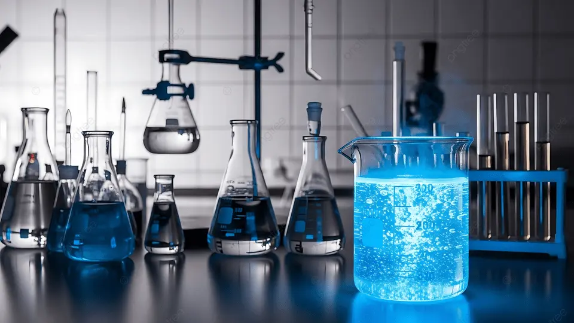
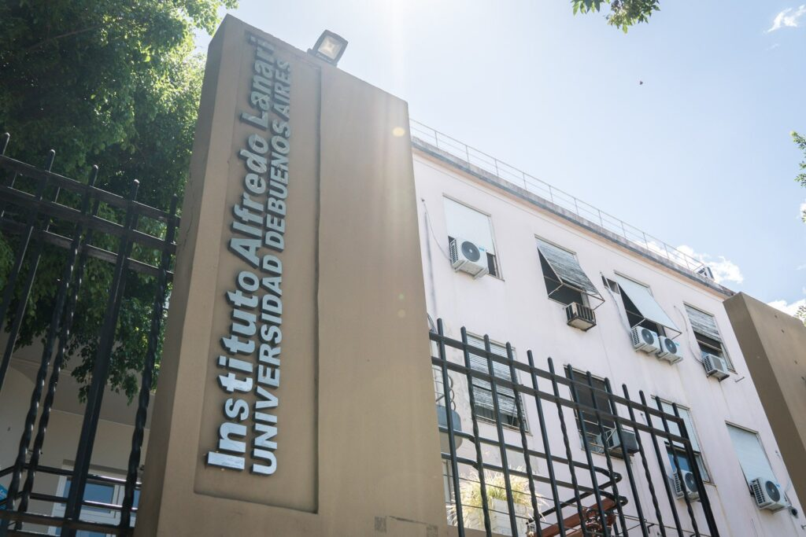

Laboratorio
Subí una imagen en assets/lab-banner.jpg
Integramos biología molecular, bioquímica y ciencia de datos para generar evidencia que transforma la práctica clínica y la salud de nuestra comunidad.

Subí una imagen en assets/lab-banner.jpg

Subí una imagen en assets/hospital-lanari.jpg
Compromiso con la salud pública desde 1949
El Laboratorio de Nefrología Experimental A. Lanari articula asistencia, investigación, innovación y prestación de servicios, integrando herramientas experimentales, analíticas y computacionales para responder preguntas biomédicas de alto impacto.
Enfoque integral del paciente renal con excelencia y compromiso.
Generamos conocimiento científico para impulsar nuevas terapias y soluciones.
Ciencia que se integra, conocimiento que impacta
Desarrollamos tecnologías de vanguardia para transformar descubrimientos en impacto.
Colaboramos con instituciones y profesionales para brindar servicios especializados.
Seleccioná una actividad para ver qué se realiza en el laboratorio y qué técnicas o ensayos pueden formar parte de cada eje de trabajo.
Apoyo a la evaluación integral del paciente renal mediante herramientas bioquímicas, moleculares y analíticas orientadas a mejorar la caracterización clínica y el seguimiento.
Desarrollo de proyectos experimentales y traslacionales para comprender mecanismos de enfermedad renal, progresión, inflamación, fibrosis y respuesta terapéutica.
Integración de nuevas tecnologías, automatización analítica y ciencia de datos para transformar hallazgos experimentales en herramientas aplicables.
Servicios especializados para grupos clínicos, instituciones académicas y equipos de investigación que requieran soporte técnico-científico en nefrología experimental.
Identificación y validación de biomarcadores moleculares para detección temprana.
Biología molecularEstrategias moleculares y clínicas para enfermedades renales complejas.
Investigación traslacionalModelos predictivos e inteligencia artificial para mejorar resultados.
Ciencia de datosRevista de Investigación Biomédica · 2025
Journal of Translational Nephrology · 2024
Clinical Experimental Renal Studies · 2024
Esta sección puede evolucionar luego a un formulario real de contacto, solicitud de colaboración o carga de consultas técnicas.
Hospital A. Lanari
Ciudad Autónoma de Buenos Aires
laboratorio.nefrologia@lanari.edu.ar
+54 11 0000-0000